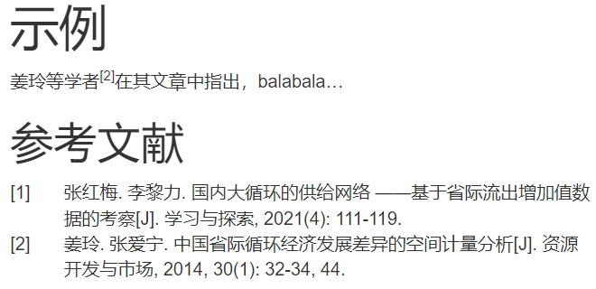

1.4 文档元素
1.4.2 转义符
对于特殊字符，可以在其前面添加\进行转义。例如\_text\_将会输出为’_text_’而非斜体。又如markdown中多个空格将会被视为一个空格，你也可以在每个空格前添加反斜杠使其保留下来。
1.4.3 分页符
添加\newpage即可，注意上下要空行。
（Cookbook中说是HTML输出也能起作用，但貌似不太行😭）
It is a LaTeX command, but the rmarkdown package is able to recognize it for both LaTeX output formats and a few non-LaTeX output formats including HTML, Word, and ODT.
1.4.4 设置动态标题
在元数据的title中，你可以添加内联代码来实现动态输入信息的效果。
---
title: "基于`r nrow(iris)`条鸢尾花数据的分析"
---当标题所需的动态元素在正文中产生时，你可以不用一开始就在元数据处设置title，直到你所需的元素出现即可。
---
author: lkj
date: 2024/7/17
output: bookdown::html_document2
---
这里是正文
```{r}
x <- runif(1, min=1, max=100)
```
---
title: "震惊！`r round(x, 2)`%的人竟干过这种事！"
---
这里是正文1.4.6 获取元数据信息
当rmarkdown文件完成编译时，所有的元数据信息将会被存储在rmarkdown::metadata这一列表对象当中。你可以在r代码块中提取该列表包含的元数据信息，例如rmarkdown::metadata$title表示获取元数据中的标题信息。
1.4.7 参考文献
要想在文末添加参考文献，可以在元数据处写入bibliography，并在后面添加你的.bib文件。.bib文件是用于管理参考文献的文件，不同类型的参考文献有不同的格式要求，可参考知乎的这篇文章。
有些时候，你可能需要不同格式的参考文献，这就得依靠.csl文件来设置参考文献的格式。你需要在元数据处的csl声明你用的.csl文件。你可以在zotero查询你想要的格式并下载对应的.csl文件，或者在这里自定义格式（我还没试过）。
下面介绍具体使用方法：
- 打开zotero，以’china’（或者’chinese’）为关键词进行搜索，点击相应的链接即可下载对应的
.csl文件。这里下载’china’关键词下的China National Standard GB/T 7714-2015 (numeric, 中文)文件。 - 将
.csl文件放在与.Rmd文件相同的目录中。（例如.css文件也是得和.Rmd文件同目录） - 在文献资源平台上找到需要的参考文献，并导出
Bibtex引用格式。这里以“万方”为例。
图 1.11: 点击引用
图 1.12: 点击Bibtex
将下载来的文件放到
.Rmd文件所在的目录中。我下载过来的文件是.txt格式，如果有其他文献，那么可以下载过来后粘贴到同一个.txt文件中，并将其重命名为reference.bib，之后便可在元数据处写入bibliography: reference.bib及csl: china-national-standard-gb-t-7714-2015-numeric.csl。@article{姜玲, author={姜玲 and 张爱宁}, title={ 中国省际循环经济发展差异的空间计量分析 }, organization={甘肃省科学技术情报研究所 and 甘肃省科学技术情报研究所}, journal={资源开发与市场}, year={2014}, volume={30}, number={1}, pages={32-34,44}, month={1}, } @article{张红梅, author={张红梅 and 李黎力}, title={ 国内大循环的供给网络 ——基于省际流出增加值数据的考察 }, organization={北京语言大学 and 中国人民大学}, journal={学习与探索}, year={2021}, volume={}, number={4}, pages={111-119}, month={4}, }在正文处使用
[@key]即可引用对应的文献，其中key就是第一个逗号前的内容（如果太长则可以任意修改，只要是唯一的就行）。如果有些文献在文中没有直接引用，则默认不显示这些参考文献。除非你在元数据的
notice处声明了'@key'，不同文献之间用逗号隔开。或者直接notice: '@*'表示显示所有的参考文献。
---
title: "示例"
output: html_document
bibliography: reference.bib
csl: china-national-standard-gb-t-7714-2015-numeric.csl
notice: '@张红梅'
---
姜玲等学者[@姜玲]在其文章中指出，balabala...
# 参考文献
图 1.13: 参考文献示例
事实上，如果你经常阅读文献，那么下载专门的文献管理工具将会是更好的选择，例如
Zotero。
当生成完参考文献后，其默认会被放在文档的末端。如果要改变其位置，例如你还需在参考文献后添加附录，你可以使用<div id="refs"></div>来控制参考文献的位置，该html语句在哪参考文献就在哪。这条语句在其他文档输出中也有效，例如PDF。
1.4.8 交叉引用
交叉引用允许你在文档中能够跳转到目标章节、图、表、公式等等。
首先实现章节的跳转，有如下三种方法：
[目标标题][文本][目标标题][文本](#目标标题的标识符)
而其余元素的交叉引用需要满足相应的条件才能实现：
- 使用
bookdown的文件输出格式3，例如从一般的output: html_document变为output: bookdown::html_document2，同理，还有pdf_document2、word_document2 - 图表需要有标题。在
bookdown下的输出文档，有标题的图表才能被编号。没有编号是不能交叉引用的。 - 相应的代码块或公式也需要有标签。代码块的标签详见第1.3.7节，公式的标签只要在输入的公式后面跟上
(\#eq:label)即可。
满足条件之后，就可以按\@ref(type:label)的形式进行交叉引用，其中type可替换为fig、tab、eq等，分别代表图、表、公式，label就是代码块或者公式的标签。例如我这里输入\@ref(fig:p13)就会出现1.13。这个只是图片的编号，所以我真实的输入会是图\@ref(fig:p13)，即图1.13。
既然提到了
bookdown有关的输出文档，还是说一下，关于bookdown的配置文件有不少，例如_output.yml、_bookdown.yml，我没精力去详细介绍，因为这又是一个填不完的坑，建议你查询官方文档。你可以在.Rmd文件（例如html_document2类型的输出格式）的同目录中添加_bookdown.yml文件，在该文件中输入下述内容（注意缩进），就能够使图表标题的前缀从字母fig或tab变成你自定义的文本。language:
label:
fig: “图”
tab: “表”
1.4.9 多位作者
如果一篇文档有多位作者的话，那么可以直接以字符串的形式输入，例如author: '小明，小红，小刚'（有无引号均可）。或许你想为每位作者附加一些基本信息，那么你可以尝试无序列表及脚注，如下所示：
1.4.10 将模型输出为公式
equatiomatic包的extract_eq能够将拟合的模型输出为公式，如下所示:
\[ \operatorname{Sepal.Length} = \alpha + \beta_{1}(\operatorname{Sepal.Width}) + \epsilon \]
\[ \operatorname{\widehat{Sepal.Length}} = 6.53 - 0.22(\operatorname{Sepal.Width}) \]
如何为提取出来的公式编号尚不清楚，如果不能的话还是手动输入吧😂
1.4.11 流程图
DiagrammeR包利用graphviz或mermaid来绘制流程图，对应的函数分别为grViz和mermaid。两个函数都得以字符串的形式来接收对应风格的绘图语言。关于选择何种函数就见仁见智了，二者示例如下：
DiagrammeR::grViz("digraph {
graph [layout = dot, rankdir = LR]
node [shape = box]
rec1 [label = 'Step 1 打开冰箱']
rec2 [label = 'Step 2 塞入大象']
rec3 [label = 'Step 3 关上冰箱']
rec1 -> rec2 -> rec3
}",
width=400, height=100)DiagrammeR::mermaid('
graph LR
node_1[Step 1 打开冰箱] --> node_2[Step 2 塞入大象]
node_2[Step 2 塞入大象] --> node_3[Step 3 关上冰箱]
',
width=400, height=100)相关语法介绍可详见graphviz官网和mermaid官网（有中英文官网，这个是中文的）。
mermaid官网还介绍了其他类型的图形，例如甘特图、桑基图。
所以我是打算就直接用
bookdown下面的文件输出格式了，功能会比一般的文件输出格式要多↩︎